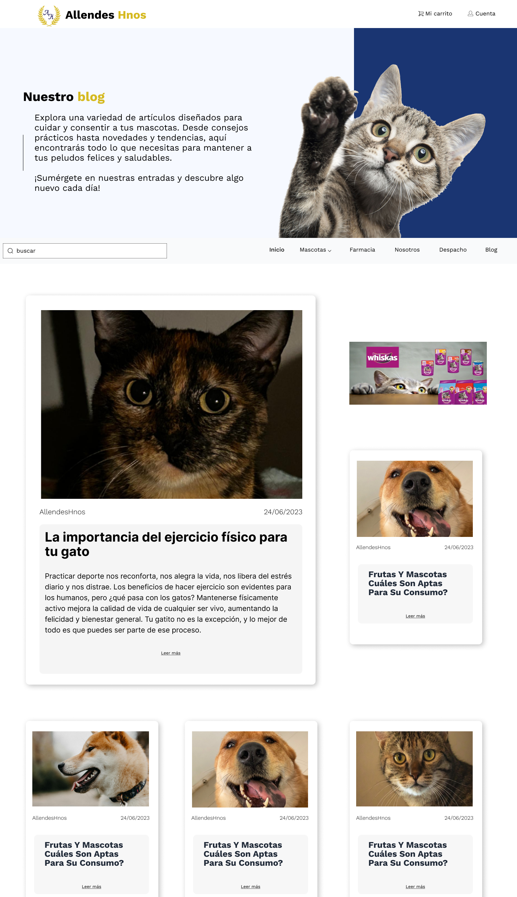
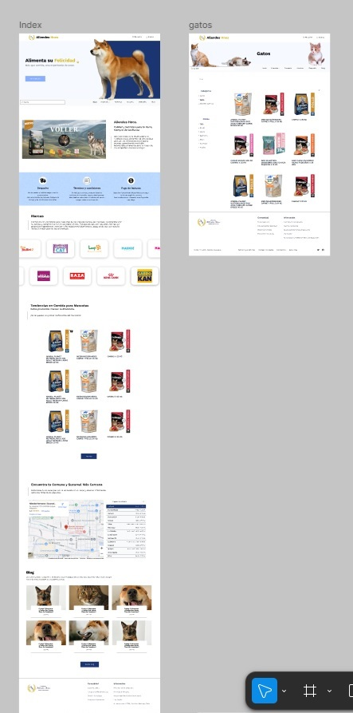

FIEL AL DISEÑO, GUAU
Allendes Hermanos fue el primer proyecto donde mi trabajo era únicamente codificar, sin tomar decisiones de diseño, solo traducir fielmente lo que estaba en el Figma al navegador. Cuando el diseño es por encargo tienes que interpretar la intención detrás de cada elemento. El mayor desafío fue la estandarización tipográfica, el diseño tenía variaciones que no seguían un sistema claro por lo que tuve que unificar eso en código sin alterar o traicionar el resultado visual que se esperaba obtener.

Trabajar solo con HTML y CSS me obligó a resolver con lo que había, sin atajos. Fue primer semestre, pero eso no quitó el nivel de atención al detalle que presté para lograr un resultado fidedigno. La categorización del contenido la resolvimos en conjunto, porque había decisiones que cruzaban diseño y estructura al mismo tiempo, ese ida y vuelta fue el primer acercamiento al dialogo en el desarrollo de un proyecto. Diseño y desarrollo son una conversación, no etapas separadas blabla
El resultado final funcionó y refleja bien la identidad que Josefa construyó. Lo que me llevé de esta experiencia no es solo haber codificado un encargo, sino entender que traducir un diseño a código siempre implica tomar decisiones ya sea grandes o pequeñas, y que hacerlo respetando la intención original también es una habilidad que me alegro de haber tenido la oportunidad de poner en práctica.
